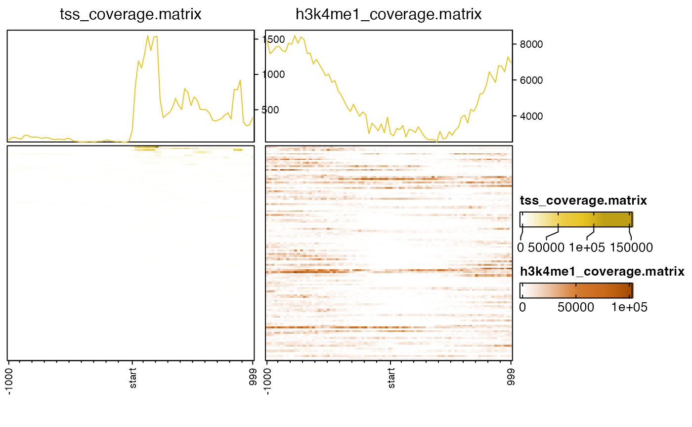

Make multiple coverage heatmaps
nmatlist2heatmaps( nmatlist, panel_groups = NULL, title = NULL, caption = NULL, k_clusters = 0, k_subset = NULL, k_colors = NULL, k_width = unit(5, "mm"), k_method = c("euclidean", "pearson", "correlation"), partition = NULL, rows = NULL, row_order = NULL, nmat_colors = NULL, middle_color = "white", nmat_names = NULL, main_heatmap = 1, anno_df = NULL, byCols = NULL, anno_row_marks = NULL, anno_row_labels = NULL, hm_nrow = 1, transform = jamba::log2signed, signal_ceiling = NULL, axis_name = NULL, axis_name_gp = grid::gpar(fontsize = 8), axis_name_rot = 90, column_title_gp = gpar(fontsize = 12), lens = -2, seed = 123, ht_gap = grid::unit(7, "mm"), profile_value = c("mean", "sum", "abs_mean", "abs_sum"), ylims = NULL, border = TRUE, iter.max = 20, use_raster = TRUE, do_plot = TRUE, legend_width = grid::unit(3, "cm"), heatmap_legend_param = NULL, annotation_legend_param = NULL, return_type = c("heatmaplist", "grid"), show_error = FALSE, verbose = TRUE, ... )
Arguments
| nmatlist |
|
|---|---|
| k_clusters | integer number of k-means clusters to
use to partition each heatmap. Use |
| k_subset | integer vector of k-means clusters to retain. Often one cluster contains mostly empty values, and can be removed using this mechanism. |
| k_colors | vector of R colors, or |
| k_width | unit width of the k-means cluster color
bar, used with |
| partition | vector used to split rows of each
matrix in |
| rows | vector of |
| row_order | integer vector used to order rows.
When |
| nmat_colors | named character vector of R colors,
to colorize each heatmap. When |
| middle_color |
|
| nmat_names |
|
| main_heatmap | integer index referring to the
entry in |
| anno_df |
|
| byCols | character vector of values in
|
| anno_row_marks | character vector of |
| anno_row_labels | character vector of optional
character labels to use instead of |
| hm_nrow | integer number of rows used to display the heatmap panels. |
| transform | either |
| signal_ceiling | numeric vector length |
| axis_name_gp | x-axis label graphic parameters,
as output from |
| axis_name_rot | numeric value either |
| column_title_gp | heatmap title graphic parameters,
as output from |
| lens | numeric value used to scale each heatmap
color ramp, using |
| seed | numeric value used with |
| ht_gap | unit size to specify the gap between multiple heatmaps.
This argument is passed to |
| profile_value | character string to define the type of numeric
profile to display at the top of each heatmap. This argument is
passed to |
| ylims |
|
| border |
|
| iter.max | integer value indicating the maximum iterations
performed by k-means clustering, only relevant when |
| use_raster | logical indicating whether to create heatmaps
using raster resizing, almost always recommended |
| do_plot | logical indicating whether to draw the heatmaps,
where |
| return_type | character string indicating the type of
data to return: |
| show_error | logical indicating whether to add error
bars to the profile plot at the top of each heatmap.
These error bars are calculated by
|
| verbose | logical indicating whether to print verbose output. |
| ... | additional arguments are passed to
|
Details
This function takes a list of normalizedMatrix objects,
usually the output of coverage_matrix2nmat(), and
produces multiple heatmaps using
EnrichedHeatmap.
This function is intended to be a convenient wrapper to help keep each data matrix in order, to apply consistent clustering and filtering across all data matrices, and to enable optional multi-row heatmap layout.
See also
Other jam genome functions:
coverage_matrix2nmat()
Examples
## There is a small example file to use for testing cov_file1 <- system.file("data", "tss_coverage.matrix", package="platjam"); cov_file2 <- system.file("data", "h3k4me1_coverage.matrix", package="platjam"); cov_files <- c(cov_file1, cov_file2); names(cov_files) <- gsub("[.]matrix", "", basename(cov_files)); nmatlist <- lapply(cov_files, coverage_matrix2nmat); nmatlist2heatmaps(nmatlist);#> ## (15:25:46) 08May2020: nmatlist2heatmaps(): Recognized 120 rows shared across all matrices. #> ## (15:25:46) 08May2020: nmatlist2heatmaps(): Defining row_order with EnrichedHeatmap::enriched_score() #> ## (15:25:46) 08May2020: nmatlist2heatmaps(): Iterating each heatmap. #> ## (15:25:46) 08May2020: nmatlist2heatmaps(): signal_name:tss_coverage.matrix, target_name:target, color:#D0445E, ylim=(NULL) #> ## (15:25:46) 08May2020: nmatlist2heatmaps(): signal_name:h3k4me1_coverage.matrix, target_name:target, color:#FD8600, ylim=(NULL) #> ## (15:25:46) 08May2020: nmatlist2heatmaps(): ht_gap: #> [1] 7mm# k-means clusters nmatlist2heatmaps(nmatlist, k_clusters=4);#> ## (15:25:48) 08May2020: nmatlist2heatmaps(): Recognized 120 rows shared across all matrices. #> ## (15:25:48) 08May2020: nmatlist2heatmaps(): Running kmeans, k_clusters:4, k_method:euclidean #> ## (15:25:48) 08May2020: nmatlist2heatmaps(): k-means cluster sizes: cluster1=26, cluster2=18, cluster3=14, cluster4=62 #> ## (15:25:48) 08May2020: nmatlist2heatmaps(): creating partition heatmap PHM. #> ## (15:25:48) 08May2020: nmatlist2heatmaps(): Defining row_order with EnrichedHeatmap::enriched_score() #> ## (15:25:48) 08May2020: nmatlist2heatmaps(): Iterating each heatmap. #> ## (15:25:48) 08May2020: nmatlist2heatmaps(): signal_name:tss_coverage.matrix, target_name:target, color:#D0445E, ylim=(NULL) #> ## (15:25:48) 08May2020: nmatlist2heatmaps(): signal_name:h3k4me1_coverage.matrix, target_name:target, color:#FD8600, ylim=(NULL) #> ## (15:25:49) 08May2020: nmatlist2heatmaps(): ht_gap: #> [1] 1mm 7mm# multiple rows nmatlist2heatmaps(nmatlist, k_clusters=4, hm_nrow=2);#> ## (15:25:49) 08May2020: nmatlist2heatmaps(): Forced use_raster=FALSE to make it compatible with using 'title' and 'caption'. #> ## (15:25:49) 08May2020: nmatlist2heatmaps(): Recognized 120 rows shared across all matrices. #> ## (15:25:49) 08May2020: nmatlist2heatmaps(): Running kmeans, k_clusters:4, k_method:euclidean #> ## (15:25:49) 08May2020: nmatlist2heatmaps(): k-means cluster sizes: cluster1=26, cluster2=18, cluster3=14, cluster4=62 #> ## (15:25:49) 08May2020: nmatlist2heatmaps(): creating partition heatmap PHM. #> ## (15:25:49) 08May2020: nmatlist2heatmaps(): Defining row_order with EnrichedHeatmap::enriched_score() #> ## (15:25:49) 08May2020: nmatlist2heatmaps(): Iterating each heatmap. #> ## (15:25:49) 08May2020: nmatlist2heatmaps(): signal_name:tss_coverage.matrix, target_name:target, color:#D0445E, ylim=(NULL) #> ## (15:25:49) 08May2020: nmatlist2heatmaps(): signal_name:h3k4me1_coverage.matrix, target_name:target, color:#FD8600, ylim=(NULL) #> ## (15:25:49) 08May2020: nmatlist2heatmaps(): Applying multi-row layout.